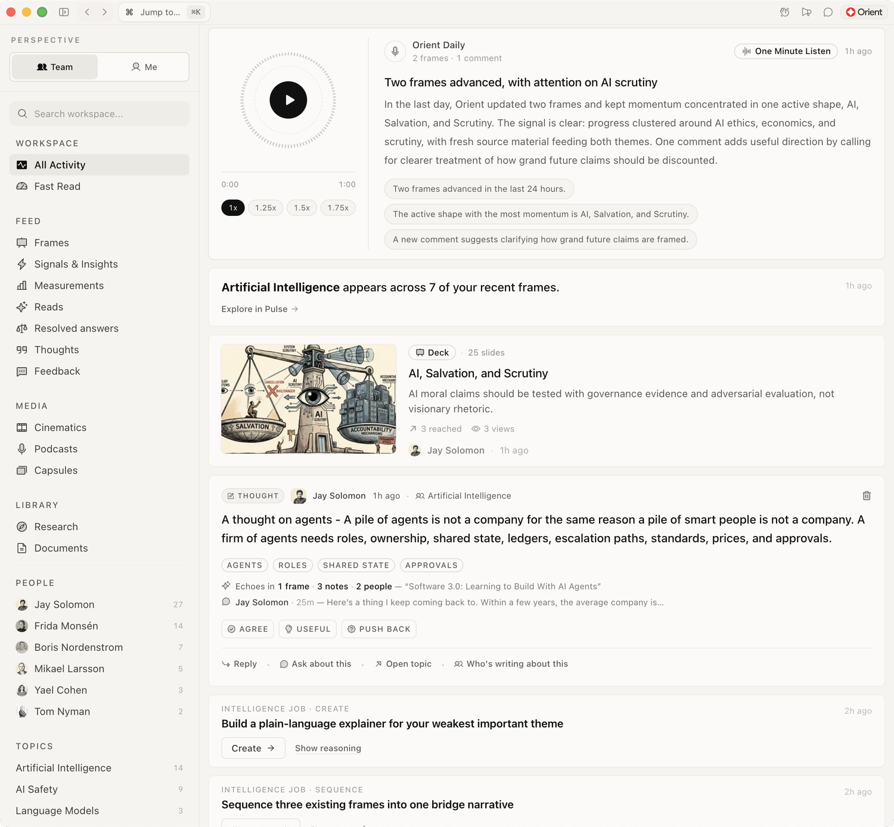
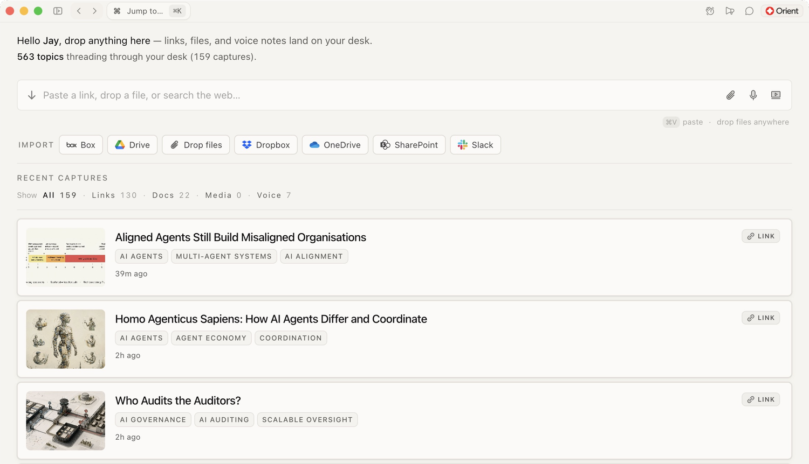
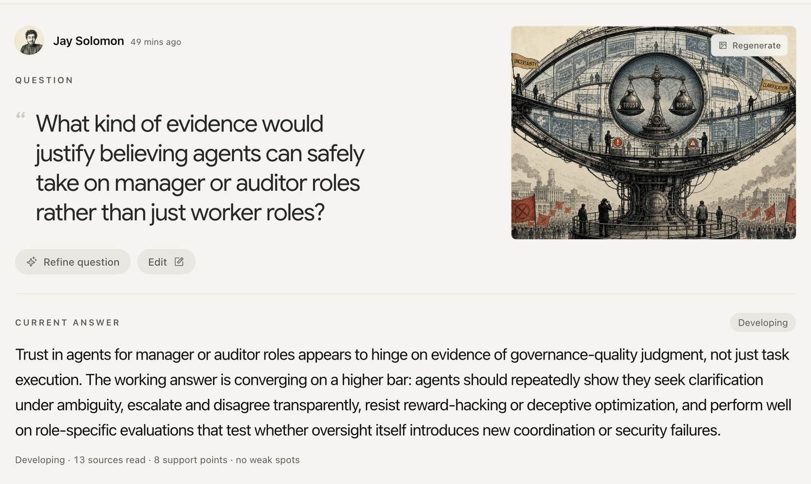
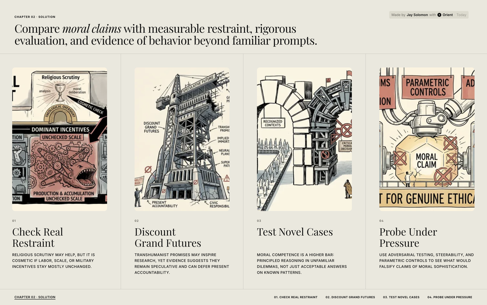

A thinking and communicating space for teams.
Orient brings together the knowledge, communication, strategy, and questions inside a team — then turns them into clear answers, supported narratives, and shared understanding.
It helps teams see what is known, what is weak, what people understand, and what is ready to move forward.

Modern teams don't lack information. They have too much of it. The hard part is no longer finding material — it's knowing what it means.
Documents, meetings, links, notes, research, decks, decisions and half-formed ideas, spread across too many tools. Orient gives teams a place to think it through.
From raw material to shared understanding.
Orient is built around a simple loop. Every turn through it leaves the team knowing more — and knowing it together.
Capture
Bring scattered material into one place, ready to work with.
Resolve
Turn a real question into a defensible answer.
Frame
Shape understanding into something others can use.
Measure
Check whether the work is clear, supported and ready to move people.
Remember
Hold on to what mattered, and how it changed.
Three moves, from material to message.
Capture
Paste a link, upload a document, add a note, record a voice memo, search the web, or pull from connected tools. Orient reads the material and extracts what matters — claims, evidence, concepts, contradictions, decisions and open questions. Capture isn't storage; it's the beginning of understanding.

Resolve
Where a real question becomes a defensible answer. Orient works through the sources, drafts an answer, and shows what holds up — giving teams something more valuable than a summary: a live boundary between knowledge and uncertainty.

Frame
Once a question is resolved, Orient helps shape it into something others can use. Frame is the bridge from “we figured this out” to “here's what the audience sees” — and it carries the evidence with the message, so communication stays connected to meaning instead of becoming polished drift.

Measure what it's worth. Remember what mattered.
Making the work is only half the loop. Orient checks whether it's strong enough to move people — then holds on to what was learned.
Measure
Before anything ships, Orient reads the work the way a sharp editor would — what is it claiming, how well is it supported, who is it for, and where will people misunderstand it? Not a vanity grade, but a read on whether the meaning is strong enough to move a decision. The result is a Meaning Health Score and a practical review of what to fix.
Remember
Nothing good gets lost. Orient keeps what mattered — the answers that held, the evidence behind them, the decisions made, and how understanding changed over time. Not a folder of files, but living memory that feeds the next question. Remember feeds back into Capture, so the team's understanding compounds.
See whether your thinking survived contact with other people.
Measure scores the work before it goes out. Impact watches what happens after — who understood it, how far it travelled, and where the meaning frayed.
Impact
A frame doesn't stop mattering the moment it's shared. Orient follows it into the world — tracking who actually engaged, whether the core message was understood, how it spread across the team, and whether the meaning held or drifted as it travelled. Know whether the idea landed, not just whether it was sent.
Everywhere the team's understanding lives.
Around the loop sits a thinking space for reasoning across everything you've gathered, watching ideas form, and seeing whether they spread.
Ask
Conversational reasoning across everything the team has gathered and produced — not just retrieval.
Activity
The home feed of what's moving, with a rolling Fast Read brief so people catch up at a glance.
Answers
The catalog of Resolve work — every question, answer, open probe and what's ready to frame.
Frames
The library of finished communication, with a daily briefing of momentum and top topics.
Deep Reads
Structured editorial briefs of important sources — core claims, evidence, weak spots, implications.
Topics
A living map of ideas as they form, sharpen and collide — built from claims, not tags.
People
A map of living expertise, drawn from the work people actually produce. Not an org chart.
Impact
Whether meaning landed — comprehension, reach, clarity, speed and meaning drift.
Library
The organised source layer — documents, media, datasets and memos that everything builds from.
One thinking space, three scales of meaning.
A calm thinking environment
A place to gather material, ask better questions, develop arguments, and remember what matters.
Shared intelligence
A living map of what the team knows, believes, has decided, and what remains unresolved — and how understanding is spreading.
A meaning system
Not a repository or a dashboard, but a system for turning knowledge into orientation.
Orient helps people know what they know, see what they don't, and turn understanding into action.
The promise is not more information. The promise is orientation.

Find your orientation.
A thinking space for teams who want to know what they know — and turn it into action. Join the waitlist for early access.